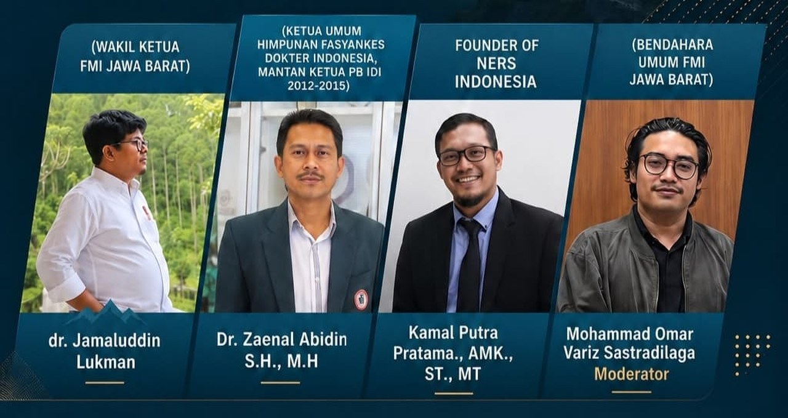

Federasi Mountaineering Indonesia (FMI) Provinsi Jawa Barat menerbitkan pernyataan sikap resmi menyusul diskusi publik bertajuk "Penguatan Kesehatan dan Keselamatan dalam Aktivitas Pendakian" yang digelar bersama Mawara di Depok pada Juli 2026. Dalam pernyataan itu, FMI Jabar memaparkan enam temuan kunci sekaligus lima komitmen tindak lanjut kepada komunitas pendaki dan pemangku kepentingan.
The Indonesian Mountaineering Federation (FMI) of West Java Province has issued an official statement following a public discussion titled "Strengthening Health and Safety in Mountaineering Activities," held together with Mawara in Depok in July 2026. In the statement, West Java FMI laid out six key findings alongside five follow-up commitments addressed to the climbing community and stakeholders.
Temuan pertama menyoroti angka kecelakaan dan kematian pendaki di Indonesia yang masih tinggi. Menurut FMI Jabar, sebagian besar insiden bukan disebabkan kondisi alam semata, melainkan keterlambatan penanganan awal dan belum termanfaatkannya golden hour secara optimal. Persoalan ini diperberat oleh belum adanya sistem keselamatan pendakian yang terintegrasi — mencakup standar Emergency Response Plan (ERP), jalur evakuasi, dan sistem komunikasi darurat yang seragam antar jalur pendakian.
The first finding highlights the persistently high rate of climbing accidents and deaths in Indonesia. According to West Java FMI, most incidents are not caused by natural conditions alone, but by delayed initial response and the underuse of the golden hour. The problem is compounded by the absence of an integrated climbing safety system — including standards for an Emergency Response Plan (ERP), evacuation routes, and uniform emergency communication across trails.
Pernyataan itu juga menilai kompetensi dasar pertolongan pertama seperti Basic Life Support (BLS) dan DRCAB di kalangan pendaki masih rendah. Pemeriksaan kesehatan pra-pendakian, menurut FMI Jabar, umumnya masih bersifat administratif dan belum menggali riwayat penyakit kronis seperti asma, jantung, hipertensi, dan diabetes. Faktor psikologis turut disorot: overconfidence, tekanan validasi media sosial, dan minimnya kesadaran risiko pada pendaki pemula dinilai berkontribusi pada insiden.
The statement also assesses that basic first-aid competencies such as Basic Life Support (BLS) and DRCAB remain low among climbers. Pre-climb health checks, it notes, are generally administrative and fail to examine chronic conditions such as asthma, heart disease, hypertension, and diabetes. Psychological factors were also raised: overconfidence, the pressure of social-media validation, and low risk awareness among novice climbers are seen as contributing to incidents.
Dua temuan terakhir menyentuh aspek hukum dan medis. FMI Jabar menyebut masyarakat kerap ragu memberi pertolongan pertama karena kekhawatiran hukum, padahal prinsip Good Samaritan melindungi penolong yang bertindak dengan itikad baik sesuai batas kompetensinya. Penanganan gigitan ular pun dinilai masih banyak memakai metode usang yang tidak lagi direkomendasikan, sementara ketersediaan serum antibisa di kawasan pegunungan sangat terbatas.
The final two findings touch on legal and medical aspects. West Java FMI notes that people often hesitate to give first aid out of legal concerns, even though the Good Samaritan principle protects those who act in good faith within the limits of their competence. Snakebite treatment, it adds, still frequently relies on outdated methods no longer recommended, while antivenom availability in mountain areas is very limited.

Menindaklanjuti temuan tersebut, FMI Jabar menyatakan lima komitmen. Organisasi akan menyusun standar Basic Mountaineering Life Support (BMLS) sebagai kurikulum pelatihan dasar, mendorong penyusunan kerangka ERP untuk jalur pendakian di Jawa Barat mulai dari jalur percontohan, serta menggencarkan edukasi publik soal pertolongan pertama, penanganan gigitan ular, dan kesiapsiagaan darurat. FMI Jabar juga menyatakan akan membangun kolaborasi lintas pihak — tenaga kesehatan, psikolog, Basarnas, pengelola taman nasional, dan komunitas pendaki — serta menjadikan isu keselamatan sebagai agenda prioritas program kerjanya.
In response, West Java FMI declared five commitments. The organization will develop a Basic Mountaineering Life Support (BMLS) standard as a basic training curriculum, push for an ERP framework for West Java trails starting with pilot routes, and intensify public education on first aid, snakebite handling, and emergency preparedness. It also stated it will build cross-sector collaboration — health workers, psychologists, Basarnas, national park authorities, and climbing communities — and make safety a priority in its work program.
FMI Jabar menutup pernyataannya dengan menegaskan bahwa keselamatan pendaki adalah fondasi bagi berkembangnya dunia mountaineering Indonesia, dan mengajak seluruh komunitas bergerak bersama mewujudkan pendakian yang lebih aman. Narahubung untuk pernyataan ini adalah Fathur dari FMI Provinsi Jawa Barat (+62 822-9324-6593).
West Java FMI closed its statement by affirming that climber safety is the foundation for the growth of Indonesian mountaineering, calling on the entire community to move together toward safer climbing. The contact for this statement is Fathur of FMI West Java Province (+62 822-9324-6593).